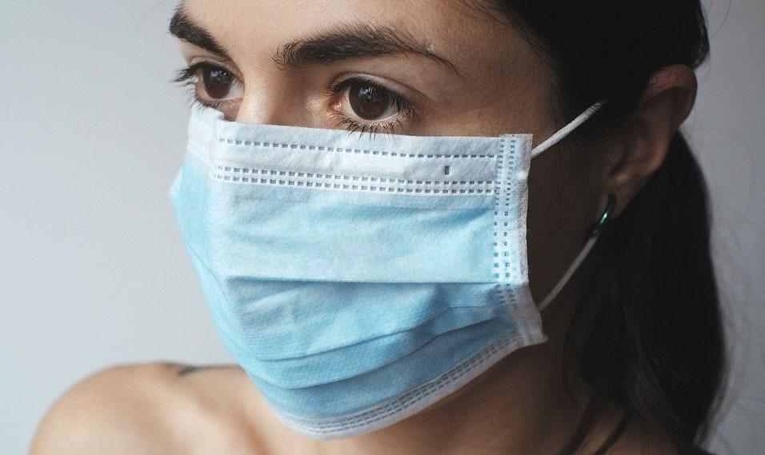
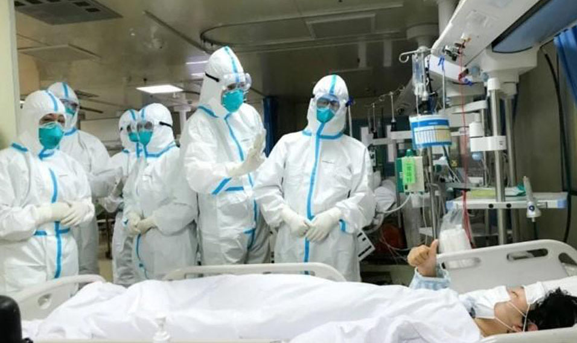
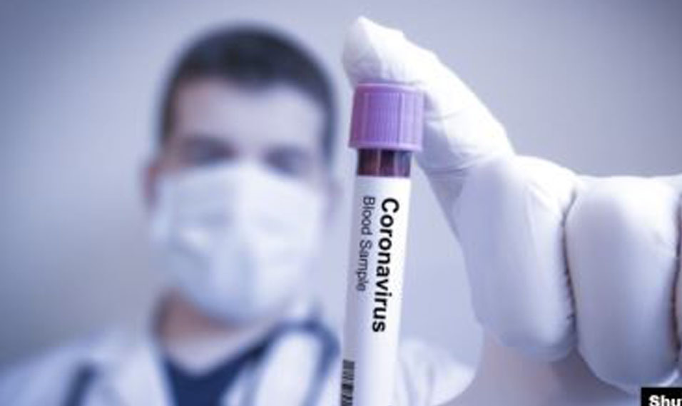
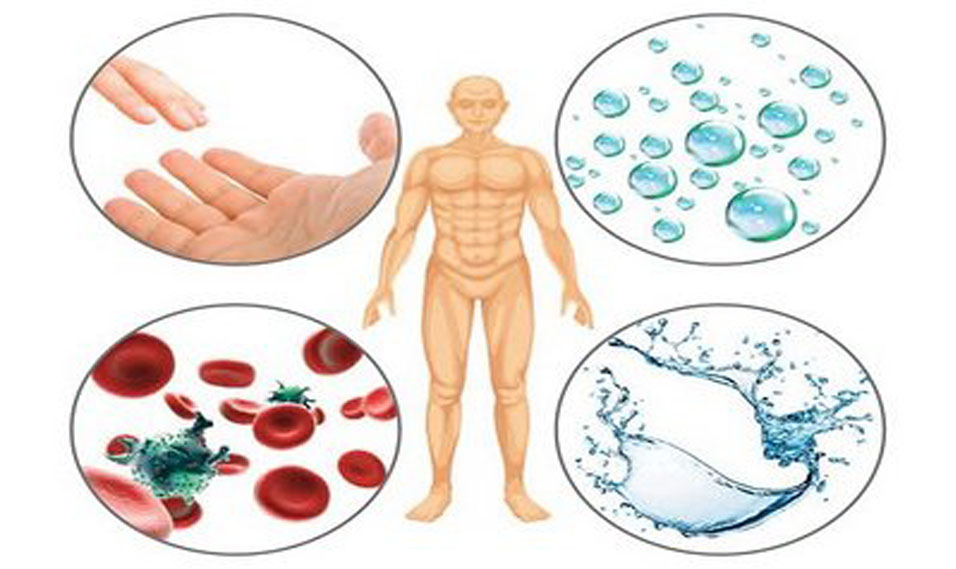
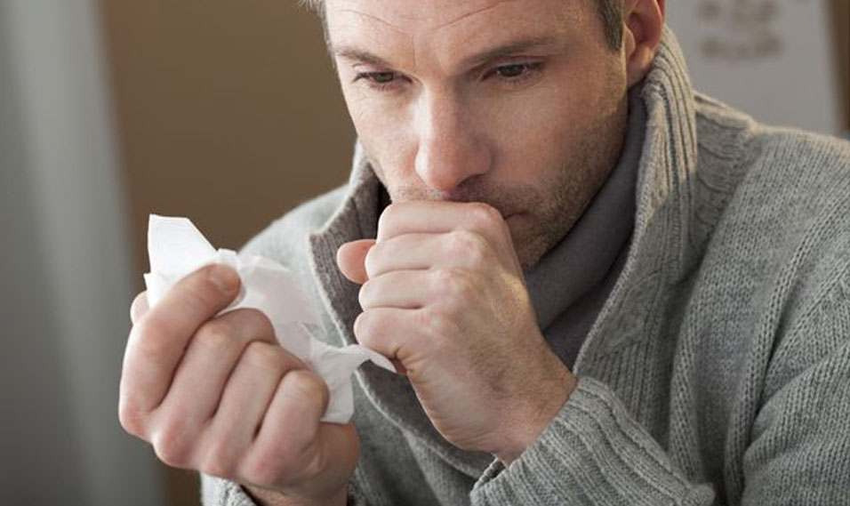

#сидим дома
Коронавирусная инфекция COVID-19 (аббревиатура от англ. COrona VIrus Disease 2019) — потенциально тяжёлая острая респираторная инфекция, погрузившая весь мир в хаос. Заболевание вызывается новым вирусом, к которому у людей нет приобретённого иммунитета
Специально для вас был подготовлен тест на знание коронавируса. Пройдите этот тест, и узнайте то, что не знали до этого!
START
1. Что из перечисленного является минимально допустимой мерой защиты от COVID-19:
Медицинская маска
Респиратор класса защиты FFP1
Респиратор класса защиты FFP2
2.Есть ли случаи повторного заражения вирусом SARS-CoV-2 COVID-19?
Нет
Да
Неизвестно
3. Какой минимальной дистанции следует держатся от зараженного COVID-19:
1 метр
2 метр
2,5 метра
4.Кто находится в группе риска высокой смертности?
Все
от 65
От 15
5. Существует ли вакцина?
Да
Нет
Не знаю
6. Что берут при анализе, выявляющем вирус?
Кровь
Мочу
Мазок ротоглотки/носоглотки
7. Какими путями передается вирус?
Воздушно-капельным и водным
Воздушно-капельным и контактным
Воздушно-пылевым и контактным
8. Что из перечисленного является средством предотвращения заболевания COVID-19:
Воздействие на организм солнца или температуры свыше 25 градусов по Цельсию
Тщательное мытье рук, и предотвращение касания к глазам, рту и носу
Употребление алкоголя
9. Какой из ниже перечисленных симптомов соответствует коронавирусу?
Чихание
Сухой кашель
Влажный кашель
10. Можно ли заразиться от домашнего животного?
Да
Нет
Не знаю
Твой результат /10
Вы отлично разбираетесь в теме!

Вы хорошо разбираетесь в теме, но всё равно следует узнать побольше!
Вы недостаточно хорошо разбираетесь в теме, вам нужно узнать побольше!
Информация по тем вопросам, на которые вы ответели неверно:
Что является минимально допустимой мерой защиты от COVID-19?
Если обобщить, то медицинские маски, скорее, помогают защитить окружающих, если вы больны, а респираторы частично защитят вас, если болеют окружающие. Класс защиты FFP1 защищает от нетоксичной пыли, но не от вируса. Класс защиты FFP2 по мнению экспертов, может обеспечить защиту от вируса во многих случаях, но не гарантирует ее. Так, к примеру, сотрудникам, потенциально контактирующим с больными, и врачам их использовать не рекомендовано, они носят респираторы класса защиты FFP3. Этот респиратор можно использоваться шесть — восемь часов. Это минимальная мера защиты
Есть ли случаи повторного заражения вирусом SARS-CoV-2?
Случаи повторного наличия COVID-19 были выялены. Но специалисты не подтверждают возможность заразиться им повторно, а полагают, что COVID-19 может оставаться в латентном состоянии в некоторых клетках человеческого тела, а позднее вновь активизироваться и атаковать органы дыхания.
Какой минимальной дистанции следует держатся от зараженного?
Держитесь на расстоянии не менее одного метра от кашляющих или чихающих людей. При кашле или чихании из носа или рта выделяются мельчайшие содержащие вирус капли, которые человек распространяет вокруг себя. Находясь слишком близко к такому человеку, вы рискуете вдохнуть эти капли и заразиться от него, в том числе коронавирусной инфекцией, если человек болен COVID-19.
Кто находится в группе риска высокой смертности?
Особому риску в ситуации с распространение коронавируса подвержены прежде всего пожилые люди, при этом уровень смертности растет в геометрической прогрессии приблизительно с 65 лет. В Китае, к примеру, уровень смертности среди инфицированных в возрастной группе до 40 лет составил 0,2%, но в возрасте от 70 до 79 лет этот показатель повысился до 8%, а с 80 лет - до 14,8%.
Существует ли вакцина?
Пока вакцины против коронавируса, которая бы помогла остановить распространение инфекции и защитить людей, нет. На данный момент ученые разработали несколько вариантов вакцины и уже тестируют их эффективность на животных. Если тесты пройдут успешно, следующий этап - испытания на людях - может начаться уже в этом году.
Что берут при анализе, выявляющем вирус?
Диагностировать вирус возможно при помощи полимеразной цепной реакции с обратной транскрипцией в реальном времени. В качестве образцов для анализа лучше подойдёт мокрота, но можно использовать и слизь из верхних дыхательных путей, если нет возможности получить образцы из нижних. В случае подозрения на инфекцию, но отрицательного результата теста, может быть произведено повторное взятие образцов для анализа из разных участков дыхательных путей
Какими путями передается вирус?
Новый коронавирус - респираторный вирус. Он передается главным образом воздушно-капельным путем в результате вдыхания капель, выделяемых из дыхательных путей больного, например при кашле или чихании, а также капель слюны или выделений из носа. Также он может распространяться, когда больной касается любой загрязненной поверхности, например дверной ручки. В этом случае заражение происходит при касании рта, носа или глаз грязными руками.
Что является средством предотвращения заболевания COVID-19?
Обычные правила личной гигиены сейчас приобретают более серьезный смысл. Так, специалисты уверяют, что правильное мытье рук минимизирует риски заражения китайским коронавирусом, который распространяется по миру. Также не стоит касаться руками своего лица
Какой из ниже перечисленных симптомов соответствует коронавирусу?
Коронавирусная инфекция COVID-19 характеризуется легким течением с такими симптомами как боль в горле, сухой кашель и повышение температуры тела. Практически все зараженные имеют симптомы. У некоторых людей болезнь может протекать в более тяжелой форме и приводить к пневмонии или дыхательной недостаточности. В более редких случаях болезнь может иметь летальный исход
Можно ли заразиться от домашнего животного?
В данный момент случаев заражения covid-19 от домашних животных нет. Они могут заразиться коронавирусом, случаи заражения домашних животных от человека есть, но могут и переносить его на теле. Поэтому необходимо соблюдать за гигиеной питомцев, делать профилактические прививки и не целовать их.
Подробная информация по тем вопросам, на которые вы ответели правильно:
Что является минимально допустимой мерой защиты от COVID-19?
Если обобщить, то медицинские маски, скорее, помогают защитить окружающих, если вы больны, а респираторы частично защитят вас, если болеют окружающие. Класс защиты FFP1 защищает от нетоксичной пыли, но не от вируса. Класс защиты FFP2 по мнению экспертов, может обеспечить защиту от вируса во многих случаях, но не гарантирует ее. Так, к примеру, сотрудникам, потенциально контактирующим с больными, и врачам их использовать не рекомендовано, они носят респираторы класса защиты FFP3. Этот респиратор можно использоваться шесть — восемь часов. Это минимальная мера защиты
Есть ли случаи повторного заражения вирусом SARS-CoV-2?
Случаи повторного наличия COVID-19 были выялены. Но специалисты не подтверждают возможность заразиться им повторно, а полагают, что COVID-19 может оставаться в латентном состоянии в некоторых клетках человеческого тела, а позднее вновь активизироваться и атаковать органы дыхания.
Какой минимальной дистанции следует держатся от зараженного?
Держитесь на расстоянии не менее одного метра от кашляющих или чихающих людей. При кашле или чихании из носа или рта выделяются мельчайшие содержащие вирус капли, которые человек распространяет вокруг себя. Находясь слишком близко к такому человеку, вы рискуете вдохнуть эти капли и заразиться от него, в том числе коронавирусной инфекцией, если человек болен COVID-19.
Кто находится в группе риска высокой смертности?
Особому риску в ситуации с распространение коронавируса подвержены прежде всего пожилые люди, при этом уровень смертности растет в геометрической прогрессии приблизительно с 65 лет. В Китае, к примеру, уровень смертности среди инфицированных в возрастной группе до 40 лет составил 0,2%, но в возрасте от 70 до 79 лет этот показатель повысился до 8%, а с 80 лет - до 14,8%.
Существует ли вакцина?
Пока вакцины против коронавируса, которая бы помогла остановить распространение инфекции и защитить людей, нет. На данный момент ученые разработали несколько вариантов вакцины и уже тестируют их эффективность на животных. Если тесты пройдут успешно, следующий этап - испытания на людях - может начаться уже в этом году.
Что берут при анализе, выявляющем вирус?
Диагностировать вирус возможно при помощи полимеразной цепной реакции с обратной транскрипцией в реальном времени. В качестве образцов для анализа лучше подойдёт мокрота, но можно использовать и слизь из верхних дыхательных путей, если нет возможности получить образцы из нижних. В случае подозрения на инфекцию, но отрицательного результата теста, может быть произведено повторное взятие образцов для анализа из разных участков дыхательных путей
Какими путями передается вирус?
Новый коронавирус - респираторный вирус. Он передается главным образом воздушно-капельным путем в результате вдыхания капель, выделяемых из дыхательных путей больного, например при кашле или чихании, а также капель слюны или выделений из носа. Также он может распространяться, когда больной касается любой загрязненной поверхности, например дверной ручки. В этом случае заражение происходит при касании рта, носа или глаз грязными руками.
Что является средством предотвращения заболевания COVID-19?
Обычные правила личной гигиены сейчас приобретают более серьезный смысл. Так, специалисты уверяют, что правильное мытье рук минимизирует риски заражения китайским коронавирусом, который распространяется по миру. Также не стоит касаться руками своего лица
Какой из ниже перечисленных симптомов соответствует коронавирусу?
Коронавирусная инфекция COVID-19 характеризуется легким течением с такими симптомами как боль в горле, сухой кашель и повышение температуры тела. У некоторых людей болезнь может протекать в более тяжелой форме и приводить к пневмонии или дыхательной недостаточности. В более редких случаях болезнь может иметь летальный исход
Можно ли заразиться от домашнего животного?
В данный момент случаев заражения covid-19 от домашних животных нет. Они могут заразиться коронавирусом, случаи заражения домашних животных от человека есть, но могут и переносить его на теле. Поэтому необходимо соблюдать за гигиеной питомцев, делать профилактические прививки и не целовать их.
Интересные факты про коронавирус:
> 1. Пандемия началась в 2020 году. Странное совпадение с другими эпидемиями, также начавшимися на пороге предыдущих столетий. А именно: чума в 1720, холера 1820 году и испанский грипп в 1920 году.
> 2. Люди перестали покупать американское пиво Corona, только из-за того, что его название созвучно с коронавирусом.
> 3. От всеобщего карантина более всего страдают малый и средний бизнес. И люди только что открывшие свое дело были вынуждены закрыться и остаться в долгах.
> 4. Лечится коронавирус точно так же, как обычный грипп, - в домашних условиях, симптоматически.
> 5. Коронавирусом уже заразились многие любимцы публики, различные звезды и выдающиеся личности: Идрис Эльба, Том Хэнкс (благо уже выличился), Принц Чарльз и др.
> 6. Один из самых необычных симптомов коронавируса - потеря чувства вкуса и/или обоняния.
> 7. В Южной Корее вирус удавалось сдерживать, пока число заболевших не достигло 30. Но женщина, получившая кодовое название "Пациент 31", заразила сразу около 1200 человек. Выяснилось, что она была очень религиозной и продолжала ходить в церковь, несмотря на кашель и высокую температуру, игнорируя распоряжения корейских властей. За 10 дней число зараженных в Южной Корее выросло с 30 до 5000.
> 8. Пандемия развивается с ускорением: от постановки первого диагноза до 100 тыс. заболевших прошло 67 дней, вторые 100 тыс. заболели за 11 дней, третьи - за четыре дня.
> 9. Пандемия добралась уже до самых отдалённых уголков земного шара, включая знаменитый остров Пасхи, где во вторник, 24 марта, был официально подтверждён первый больной - 42-летний мужчина.
> 10. Откуда появился SARS-CoV-2, точно неизвестно, но похожие на него вирусы переносят летучие мыши и панголины.